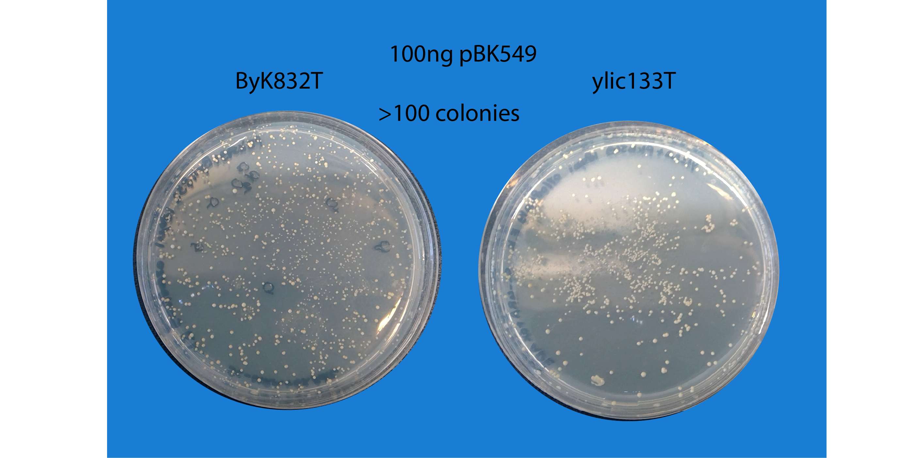

Title: 05082019-Byk832 transformation with pBk549 :ok: :white_check_mark:
Contents
72. Title: 05082019-Byk832 transformation with pBk549 :ok: :white_check_mark:#
72.1. Date#
05082019
72.2. Objective#
To succesfully transform Byk832 :pray: with the pBK549 plasmid, because so far we have got very low yield in the transformation and it seems that also the transformants are not the right cells for SATAY (look at the unpassed required test,:point_right: :(->Check)
72.3. Method#
This time we (me and Enzo) will also transform yLL3a, ylic33_1, besides Byk832, to have another strain to see if we get the same efficiency as before and for the case of ylic133_1, to also test the background one the check of hardly growth in -ade and fully growth is succesfully passed.
10ml YPD incubation 14:30 (05082019)
Dilution 2000X of yll3a and ylic133_1 in a final volume of 20mL, and 2X dilution of Byk832 in a final volume of 20mL. (06082019 13:30)
OD measurements of the overnight culture at 9:00 (07082019):
Strain |
OD (100x diluted) |
Titer |
Dilution factor to OD=0.5 in 25mL |
|---|---|---|---|
yLL3a |
0.14 |
14 |
28x -> 892uL cells |
ylic133_1 |
0.095 |
9.5 |
19x -> 1,316mL cells |
Byk832 |
0.142 |
14 |
28x -> 892uL cells |
Incubation from OD=0.5 to OD=2. Started at 9:20
OD measurements of the incubated culture at 11:00:
Strain |
OD (10x diluted) |
Titer |
|---|---|---|
yLL3a |
0.1 |
1 |
ylic133_1 |
0.073 |
0.7 |
Byk832 |
0.059 |
0.6 |
OD measurements of the incubated culture at 13:15:
Strain |
OD (10x diluted) |
Titer |
|---|---|---|
yLL3a |
0.19 |
1.9 |
ylic133_1 |
0.14 |
1.4 |
Byk832 |
0.07 |
0.7 |
OD measurements of the incubated culture at 13:45:
Strain |
OD (10x diluted) |
Titer |
|---|---|---|
yLL3a |
0.274 |
2.7 |
ylic133_1 |
0.2 |
2 |
Byk832 |
0.09 |
0.9 |
Heat shock @42C for yll3a and ylic133_1 started at 15:05 for 30 mins
Byk832 OD @14:45 = 1.8 :)
100ng pBK549 for transformation
72.4. Results#
12082019:
Colonies in all plates :) but in the negative controls :)
The efficiency in terms of number of colonies per strain is , first yll3a, Byk832 and ylic133_1. Though the Byk832 has not grown completely yet, but you can see the small colonies there.

21082019: Transformation plates after 10 days in room temperature, to better see the efficiency, it is like Benoit and Agnes obtained

72.5. Conclusion#
The plasmid could be integrated in other strains , and in the case of W303 background in wild type reach it like the efficiency of Benoit in his transformation with Byk832 (or more).
My strain ylic133_1 (ade2- and ura3-) also could be transformed with decent efficiency ~ 50 colonies per 100ng plasmid.